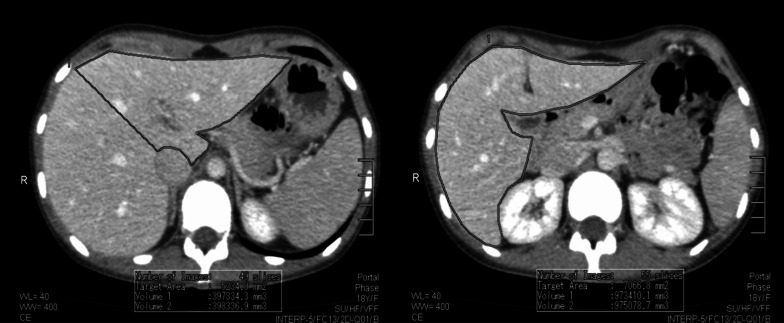
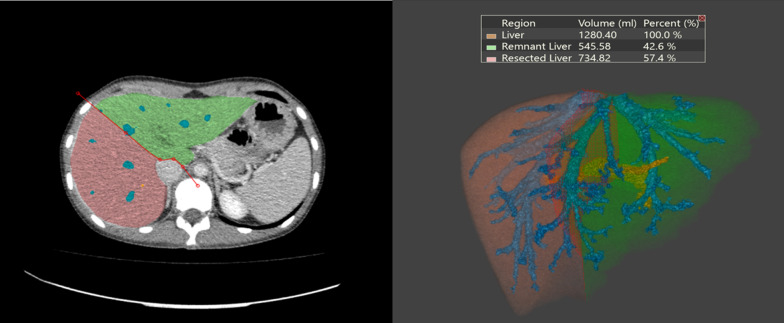
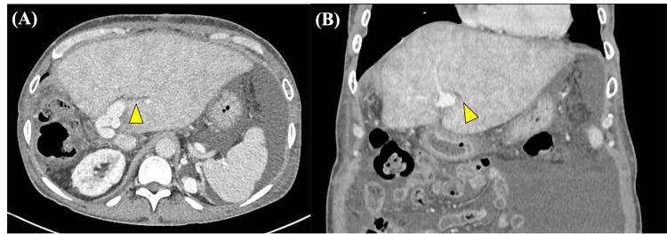
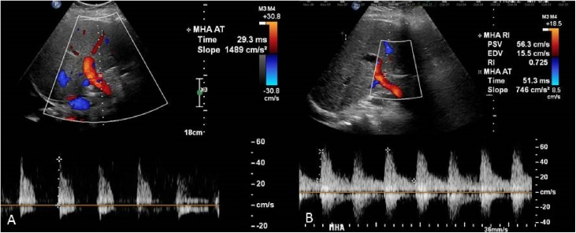

1825 — Hội chứng gan nhỏ sau ghép/cắt gan lớn: thể tích – dòng cửa – tắc dòng ra / Small-for-size syndrome (SFSS)
Tags: pattern:gan-nho pattern:tang-tuoi-mau-cua pattern:ung-huyet-gan-ghep pattern:suy-chuc-nang-gan vung:gan score:GRWR score:GV-SLV score:ILTS-SFSS-2023 protocol:CT-volumetry protocol:Doppler-cua protocol:SAE
Mức chắc chắn (certainty): tổng hợp y văn (literature synthesis) — ghép 2 tổng quan về SFSS trong ghép gan sống cho (LDLT) (Clin Mol Hepatol 2025, PMC11925445, CC BY-NC 3.0; Ann Gastroenterol Surg 2026, PMC12757166, CC BY-NC 4.0), 1 đoàn hệ 577 ca ghép có cắt lách đồng thời áp dụng phân độ ILTS 2023 (PMC13327040, CC BY 4.0), 1 nghiên cứu so sánh 3 cách đo thể tích gan trên CT (PMC10185718, CC BY 4.0), 1 ca tắc dòng ra tĩnh mạch gan sau ghép có đủ CT – Doppler – can thiệp (PMC13124245, CC BY 4.0) và 1 ca cướp máu lách (splenic steal) có chụp mạch + Doppler trước/sau nút động mạch lách (PMC6138849, CC BY-NC-ND 4.0 — ảnh giữ nguyên bản). Không gắn một bệnh án đơn lẻ cho phần số liệu.
Bài này là nhánh "thể tích – dòng chảy" của 1821 – Suy gan sau cắt gan (PHLF). 1821 dạy định nghĩa suy gan bằng INR + bilirubin từ ngày 5 và các thang ISGLS/50-50/FLIS. Bài này trả lời câu hỏi khác: khi gan còn lại/graft nhỏ thì cơ chế gây suy là gì, đọc thể tích trên CT ra sao, và khi nào phải can thiệp vào dòng cửa chứ không phải chờ — đồng thời tách SFSS khỏi tắc dòng ra tĩnh mạch gan, thứ trông giống hệt trên phim nhưng xử trí ngược lại.
Câu chốt: "gan nhỏ" là chuyện của thể tích, nhưng tổn thương thật là chuyện của dòng chảy. Ngưỡng kinh điển GRWR ≥ 0,8% và/hoặc GV/SLV ≥ 40% giữ tỉ lệ SFSS dưới 10%, nhưng cùng một thể tích, ai có áp lực tĩnh mạch cửa (PVP) > 20 mmHg hoặc lưu lượng cửa > 250–300 mL/phút/100 g gan thì vẫn suy — đó là khái niệm "small-for-flow". Điều trị không phải truyền albumin, mà là giảm dòng cửa (PIM): cắt/nút động mạch lách, shunt cửa–chủ, somatostatin; và trước khi làm bất cứ điều gì, phải loại tắc dòng ra — gradient tĩnh mạch gan–IVC > 3 mmHg hoặc gradient cửa > 5 mmHg là chỉ định can thiệp cơ học.
1. Tổng quan bệnh học – cơ chế hình ảnh
1.1 Vì sao một graft nhỏ lại bị "đánh" bởi chính dòng máu nuôi nó
- Sinh lý bình thường: gan nhận ~75% lưu lượng từ tĩnh mạch cửa nhưng ~50% oxy từ động mạch gan; hai hệ bù trừ nhau qua phản ứng động mạch gan (hepatic arterial buffer response) — cửa xuống thì động mạch lên và ngược lại.
- Trong graft/gan còn lại quá nhỏ: toàn bộ lưu lượng cửa của một cơ thể lớn dồn vào một khối nhu mô nhỏ → tăng vận tốc và áp lực trong sinusoid. Lực cắt (shear stress) làm tổn thương nội mô xoang, phù – ứ huyết xoang, hoại tử tế bào gan vùng quanh tĩnh mạch trung tâm, đồng thời ức chế dòng động mạch gan → thiếu máu đường mật (đường mật chỉ nuôi bằng động mạch) → ứ mật, hẹp đường mật, nhiễm trùng. Đây là chuỗi giải thích tại sao SFSS biểu hiện bằng vàng da + cổ trướng + rối loạn đông máu chứ không chỉ "men gan cao" (PMC11925445; PMC12757166).
- Vì sao có cổ trướng "không cạn": tăng áp lực xoang + tăng áp cửa + giảm tổng hợp albumin → dịch tiết vào ổ bụng với tốc độ hàng lít/ngày, đáp ứng kém với lợi tiểu; tổng quan nhấn mạnh bù albumin 5% theo lượng dịch mất, không phải hạn chế nước (PMC11925445).
- Vì sao tắc dòng ra (hepatic venous outflow obstruction, HVOO) trông y hệt: nếu miệng nối tĩnh mạch gan hẹp, máu ứ lại sau xoang → phù gan, ngấm thuốc không đồng nhất, dấu "cổ áo quanh cửa" (periportal collar sign), giãn tĩnh mạch gan, và mất phổ ba pha trên Doppler. Trên CT, hình ảnh này không phân biệt được với SFSS; chỉ gradient áp lực và đáp ứng với nong/stent mới chốt (PMC13124245).
- Vì sao CT đo thể tích lại quan trọng mà vẫn hay sai: thể tích CT ước lượng quá cân nặng graft thật vì gan được tưới máu và chứa máu/dịch; trong 60 người hiến, sai số trung bình 12,7 ± 16,6% (thủ công), 17,1 ± 17,3% (bán tự động) và 14,7 ± 16,8% (tự động), tương quan với cân nặng graft r = 0,730 / 0,685 / 0,699 (PMC10185718). Nghĩa là một "GV/SLV 40%" trên phần mềm có thể là 35% thật — vì vậy ngưỡng an toàn phải dùng kèm cân nặng thật của mảnh ghép và đo áp lực trong mổ.
1.2 Ngưỡng định lượng nằm lòng
| Đại lượng | Ngưỡng / số liệu | Ý nghĩa thực hành | Nguồn |
|---|---|---|---|
| GRWR (graft-to-recipient weight ratio) | ≥ 0,8% (một số trung tâm nhận 0,6% khi có PIM) | Ngưỡng chọn graft; dưới ngưỡng → SFSS tăng | PMC11925445 |
| GV/SLV (graft volume / standard liver volume) | ≥ 40% | Tương đương GRWR 0,8%; < 25–27% gắn với bệnh suất – tử vong cao | PMC11925445; PMC12757166 |
| Tỉ lệ SFSS khi đạt ngưỡng | < 10% | Nền để so sánh khi đánh giá một ca "đã đủ thể tích mà vẫn suy" | PMC11925445 |
| PVP (áp lực tĩnh mạch cửa) trong mổ | > 20 mmHg → phải PIM (ILTS 2017); > 15 mmHg là ngưỡng của nhiều trung tâm | Biến số dự báo mạnh hơn thể tích | PMC11925445; PMC12757166 |
| PVF (lưu lượng cửa) | > 250 mL/phút/100 g → cân nhắc shunt; > 300 mL/phút/100 g → nguy cơ SFSS tăng rõ | Dùng Doppler trong mổ / sau mổ | PMC11925445 |
| Lưu lượng động mạch gan | < 100 mL/phút = giảm tưới máu ("cướp máu lách") | Chỉ định nút/cắt động mạch lách | PMC11925445; PMC6138849 |
| Gradient cửa | > 5 mmHg → can thiệp | Loại/tách tắc cửa | PMC11925445 |
| Gradient tĩnh mạch gan – IVC | > 3 mmHg → can thiệp | Chốt HVOO, không phải SFSS | PMC11925445 |
| Sai số đo thể tích CT | 12,7% (thủ công) · 17,1% (bán tự động) · 14,7% (tự động) | Không bao giờ đọc thể tích như số tuyệt đối | PMC10185718 |
| SFSS độ B/C dù đã cắt lách | 18,2% (105/577); sống 1 năm 81,9% vs 93,9% | Ngay cả khi đã PIM vẫn còn 1/5 thất bại | PMC13327040 |
| Yếu tố nguy cơ độc lập (dù đã cắt lách) | MELD ≥ 30 · NLR ≥ 4,5 · tuổi người hiến ≥ 50 | Dùng để chọn ca cần theo dõi sát | PMC13327040 |
2. Mẫu hình + chẩn đoán phân biệt theo cơ chế (Gamut)
2.1 Ba câu hỏi phải trả lời trước mọi ca "gan ghép xấu đi"
- Thể tích có đủ không? (GRWR, GV/SLV, cân nặng graft thật)
- Dòng vào có quá nhiều không? (PVP, PVF, kích thước lách, lưu lượng động mạch gan)
- Dòng ra có tắc không? (miệng nối tĩnh mạch gan, gradient, phổ Doppler)
Ba câu này tương ứng ba nhóm nguyên nhân chữa được bằng ba cách khác nhau: chọn graft/PIM – PIM – nong/stent.
2.2 Gamut theo bối cảnh
- Sau LDLT, tuần đầu: SFSS (thể tích ± dòng), EAD (tổn thương do thiếu máu – tái tưới máu), PAD (suy graft nguyên phát), HVOO, huyết khối/ hẹp động mạch gan, hẹp miệng nối cửa, rò mật/nhiễm trùng.
- Sau cắt gan lớn: PHLF (định nghĩa ISGLS, bài 1821) với sFLR < 20/30/40% theo nền gan; SFSS do tăng dòng cửa ở gan còn lại; rò mật (bài 1814) và nhiễm trùng ổ bụng.
- Sau nút mạch / tắc mạch cửa (PVE) chờ cắt gan: hội chứng sau nút mạch (bài 1834) — sốt trong 72 giờ, WBC đi xuống, không phải suy gan.
2.3 Hai khái niệm dễ lẫn
- SFSS (small-for-size syndrome): graft quá nhỏ so với nhu cầu chuyển hóa — tiêu chuẩn gắn với GRWR < 0,8–1,0%.
- Small-for-flow: mất cân bằng giữa dòng cửa và kích thước graft — graft có thể "đủ cân" nhưng áp lực/lưu lượng cửa quá cao; đây là lý do ILTS-iLDLT-LTSI 2023 chuyển trọng tâm từ "size" sang "flow" và đưa ra phân độ A/B/C (PMC11925445; PMC12757166).
3. Bảng so sánh phân biệt (ma trận đối chiếu)
| Thực thể (entity) | Hình ảnh điển hình | Chốt vào (rule-in) | Chốt loại (rule-out) | Gợi ý xác nhận |
|---|---|---|---|---|
| SFSS | Graft nhỏ; CT: gan ngấm thuốc không đồng nhất nhẹ, có thể phù quanh cửa; Doppler: PVV cao, động mạch gan RI cao/giảm dòng tâm trương; cổ trướng nhiều | GRWR < 0,8% + PVP > 20 mmHg + bilirubin/INR tăng từ ngày 3–5 kèm cổ trướng > 1 L/ngày, sau khi loại trừ kỹ thuật | Gradient tĩnh mạch gan–IVC ≤ 3 mmHg + miệng nối cửa thông + không hẹp động mạch → không phải nguyên nhân cơ học | Đo PVP/PVF trong mổ; Doppler + CT; thử PIM |
| Tắc dòng ra tĩnh mạch gan (HVOO) | CT: ngấm thuốc không đồng nhất + dấu "cổ áo quanh cửa", giãn tĩnh mạch gan so với IVC; Doppler: mất phổ ba pha, dòng giảm/đảo | Gradient tĩnh mạch gan–IVC > 3 mmHg; giãn tĩnh mạch gan; đáp ứng sau nong/stent | Gradient bình thường + phổ ba pha còn → loại | Doppler có/không cản quang; chụp tĩnh mạch gan + đo gradient; stent |
| Hẹp/huyết khối động mạch gan | Doppler: không thấy dòng động mạch, RI = 1 hoặc dòng đảo; CTA: chỗ hẹp/không ngấm | Mất tín hiệu động mạch trên Doppler + CTA xác nhận | Động mạch thông, phổ tốt → loại | CTA mỏng; Doppler hàng ngày tuần đầu |
| Hẹp miệng nối tĩnh mạch cửa | CTA/CTV: chỗ hẹp; Doppler: PVV tăng tại chỗ hẹp, phổ liên tục, giãn cửa trước hẹp | Chênh áp > 5 mmHg qua chỗ hẹp; giãn tĩnh mạch cửa trước hẹp | Không chênh áp, phổ bình thường → loại | CTV + đo áp lực khi chụp can thiệp |
| EAD / PAD | Không có dấu hiệu cơ học; men gan tăng mạnh | EAD: bilirubin > 10 mg/dL hoặc INR > 1,6 ngày 7; PAD: bilirubin > 20 mg/dL, INR > 2 sau ngày 7 | Có nguyên nhân cơ học/dòng chảy → không quy cho EAD/PAD | Theo dõi xét nghiệm, loại trừ cơ học |
| Cướp máu lách (splenic steal) | Lách to; Doppler động mạch gan mất dòng tâm trương; chụp mạch: dòng dồn về lách | Lưu lượng động mạch gan < 100 mL/phút + hình chụp mạch; cải thiện ngay sau nút/cắt động mạch lách | Sau nút lách phổ không đổi → tìm nguyên nhân khác | Chụp mạch; Doppler trước/sau can thiệp |
| Rò mật / nhiễm trùng ổ bụng | Dịch quanh gan, biloma, khí; sốt, WBC tăng | Bilirubin dịch/máu > 1 (bài 1820); cấy dương; ổ dịch ngấm viền | Dịch trong, cấy âm, không ổ → loại | Siêu âm/CT; chọc hút; ERCP/PTBD |

*Hình trái: đặt vùng quan tâm (ROI) thủ công trên từng lát cắt thì tĩnh mạch cửa; đây là cách tương quan tốt nhất với cân nặng graft thật (r = 0,730) nhưng vẫn sai 12,7%. Nguồn: Insights Imaging 2023 (PMC10185718), Fig. 2 — CC BY 4.0, nguyên bản.*4. Protocol chụp + hệ phân độ/điểm chuẩn hóa
4.1 Protocol CT thể tích trước ghép/cắt gan
- Thì chụp: tĩnh mạch cửa (portal venous phase, ~70–80 giây) — cần cả nhu mô và tĩnh mạch để phân vùng; lát ≤ 1–2 mm, tái tạo 1 mm cho dựng 3D.
- Cách đo: thủ công (manual) vẽ contour từng lát → tương quan tốt nhất với cân nặng graft (r = 0,730, sai số 12,7%); bán tự động (OsiriX) r = 0,685, sai 17,1%; tự động r = 0,699, sai 14,7% — khác biệt có ý nghĩa giữa thủ công và bán tự động (p = 0,017) nhưng không giữa thủ công và tự động (p = 0,199) (PMC10185718).
- Nguyên tắc đọc số: luôn ghi thể tích (mL), ước tính cân nặng (g) và sai số ±10–17%; nếu kết quả nằm sát ngưỡng (GV/SLV 38–42%) thì không được kết luận một mình — phải dùng cân nặng graft thật trong mổ và PVP.
- Mốc tham chiếu: trong 60 người hiến, thể tích gan toàn bộ 1.164,4 ± 137,0 mL (thủ công), thùy phải 762,0 ± 122,4 mL, cân nặng graft thật 711,2 ± 142,9 g (PMC10185718) — cho thấy thể tích > cân nặng khoảng 7% ngay cả khi đo tốt.

*Phần mềm tự động tô màu nhu mô và dựng cây mạch; bảng số ghi gan 1.280,40 mL, phần còn lại 545,58 mL (42,6%), phần cắt 734,82 mL (57,4%). Đây là dạng báo cáo chuẩn để hội chẩn: thể tích tuyệt đối + % + sai số, không chỉ "còn 42%". Nguồn: Insights Imaging 2023 (PMC10185718), Fig. 5 — CC BY 4.0, nguyên bản.*4.2 Protocol Doppler sau ghép (ngày 1–7, rồi theo lịch)
- Tĩnh mạch cửa: đường kính, vận tốc trung bình (PVV), hướng dòng; PVV giảm rõ hoặc đảo dòng = nghi tắc/hẹp; PVV tăng kèm phổ liên tục tại một điểm = nghi hẹp miệng nối. (Các nguồn đã đọc không đưa ra một ngưỡng cm/s thống nhất — mỗi trung tâm tự đặt; bài không bịa số.)
- Động mạch gan: PSV, RI; RI = 1 hoặc mất hoàn toàn dòng tâm trương = nghi hẹp/tắc hoặc cướp máu lách (ca PMC6138849: sau nút lách PSV 56,3 cm/s, EDV 15,5 cm/s, RI 0,725).
- Tĩnh mạch gan: phổ ba pha là bình thường; mất phổ ba pha, dòng đơn hướng/giảm = nghi tắc dòng ra → đo gradient.
- Trong mổ (chuẩn vàng): PVP > 20 mmHg → PIM; PVF > 250 mL/phút/100 g → cân nhắc shunt cửa–chủ; ghi lại lưu lượng động mạch gan trước và sau PIM.
4.3 Phân độ SFSS (ILTS-iLDLT-LTSI 2023) và thuật toán PIM
- Định nghĩa cũ vẫn phải nhớ vì còn dùng trong y văn: Soejima 2003 — bilirubin > 5 mg/dL ở ngày 14 + cổ trướng > 1 L/ngày (hoặc > 500 mL/ngày ở ngày 28); Dahm 2005 — GRWR < 0,8%** + **≥ 2 tiêu chí** (bilirubin **> 100 µmol/L, INR > 2, bệnh não gan độ 3–4) kéo dài 3 ngày liên tiếp trong tuần đầu, sau khi loại trừ nguyên nhân kỹ thuật/miễn dịch/nhiễm (PMC11925445).
- Phân độ 2023 (A/B/C) đổi cách xử trí:
- Độ A — rối loạn chức năng nhẹ: điều trị nội khoa (somatostatin/terlipressin, kiểm soát dịch).
- Độ B — đã có tăng áp lực tĩnh mạch cửa: can thiệp ngoại khoa hoặc điện quang (PIM).
- Độ C — suy gan: PIM + tích cực tìm ghép lại (PMC11925445; áp dụng trong PMC13327040 với 18,2% độ B/C).
flowchart TD
A[Graft nhỏ: GRWR < 0,8% hoặc GV/SLV < 40%] --> B[Đo PVP và lưu lượng cửa trong mổ]
B --> C{PVP ≤ 15 mmHg?}
C -->|Có| D[Không cần PIM, theo dõi Doppler]
C -->|Không| E{GRWR}
E -->|"< 0,70%"| F[Shunt bán cửa–chủ HPCS]
E -->|"0,70–0,74%"| G{PVP > 18 mmHg?}
G -->|Có| F
G -->|Không| H[Cắt động mạch lách SAL]
E -->|"0,75–0,79%"| H
D --> I{Sau mổ: bilirubin, INR, cổ trướng tăng?}
I -->|Không| J[Theo dõi thường quy]
I -->|Có| K[Doppler + CT: loại tắc dòng ra, hẹp ĐM gan, hẹp cửa]
K --> L{Gradient tĩnh mạch gan–IVC > 3 mmHg?}
L -->|Có| M[Nong hoặc stent tĩnh mạch gan]
L -->|Không| N[PIM muộn: nút động mạch lách, somatostatin, terlipressin]
*Thuật toán PIM lấy từ protocol của Soin và cộng sự (dẫn trong PMC11925445): không PIM nếu PVP ≤ 15 mmHg hoặc PVP > 15 mmHg nhưng GRWR ≥ 0,80%.*
5. Biến thể bình thường và cạm bẫy
- "Đủ thể tích" không loại trừ SFSS: trong 577 ca đã cắt lách đồng thời, 18,2% vẫn SFSS độ B/C; MELD ≥ 30, NLR ≥ 4,5, tuổi hiến ≥ 50 là yếu tố độc lập (PMC13327040). Đừng đọc GRWR 0,85% rồi kết luận an toàn.
- Thể tích CT ≠ cân nặng graft: sai số 12,7–17,1%, và thể tích luôn lớn hơn cân nặng thật (PMC10185718). Ca sát ngưỡng phải dùng cân nặng thật + PVP.
- Ngấm thuốc không đồng nhất sau ghép không đồng nghĩa SFSS: dấu "cổ áo quanh cửa" + giãn tĩnh mạch gan là HVOO — phải đo gradient trước khi tăng thuốc/nuôi dưỡng (PMC13124245). Đây là cạm bẫy "điều trị gan nhỏ" trong khi có miệng nối hẹp.
- Cướp máu lách không phải SFSS: lách to + mất dòng tâm trương động mạch gan; sau nút động mạch lách, phổ tâm trương hồi phục ngay (PMC6138849). Nếu chỉ nhìn bilirubin sẽ truy "suy graft" và bỏ mất can thiệp 20 phút.
- Đừng nhầm với hội chứng sau nút mạch: sốt – đau – tăng bạch cầu trong 72 giờ sau nút mạch/PVE là phản ứng viêm vô khuẩn, WBC đi xuống, không phải suy gan (bài 1834).
- Gan nhiễm mỡ và tuổi người hiến làm graft "nhỏ về chức năng" dù thể tích đạt: cùng GRWR, graft thoái hóa mỡ/người hiến lớn tuổi chịu PVP > 15 mmHg kém hơn (PMC11925445).
- Sai số do phần mềm: tự động có thể tô nhầm nhu mô thận/tụy vào gan (đã báo trong PMC10185718) — luôn xem lại đường contour, nhất là mặt dưới gan.
6. Tự lượng giá — Blind Quiz
Ca 1 — Nam 57 tuổi, LDLT thùy phải, GRWR 0,72%. Ngày 6: vàng da tăng, cổ trướng 1,2 L/ngày, dẫn lưu 400 mL dịch trong. CT thì tĩnh mạch cửa:

- Gợi ý: không sốt, WBC giảm dần, cấy dịch âm.
- Hỏi: mô tả kiểu ngấm thuốc? Ba chẩn đoán phân biệt? Dấu hiệu nào tách SFSS khỏi nguyên nhân cơ học?
Bấm để hiện đáp án (findings + chẩn đoán)
- Findings: ngấm thuốc không đồng nhất lan tỏa toàn gan ghép + dấu "cổ áo quanh cửa" (periportal collar sign) — viền giảm tỷ trọng chạy theo khoảng cửa (mũi tên vàng, ảnh A trục và B coronal).
- Chẩn đoán: tắc dòng ra tĩnh mạch gan (HVOO) — không phải SFSS thuần. Cơ chế: ứ máu sau xoang → phù khoảng cửa và ngấm thuốc không đều.
- Dấu hiệu tách bạch: Doppler tĩnh mạch gan mất phổ ba pha + gradient tĩnh mạch gan–IVC > 3 mmHg; nong/stent làm hết phù và giảm bilirubin. Nếu gradient bình thường và miệng nối cửa thông → quay lại SFSS và PIM.
- Nguồn ảnh: Cureus 2026 (PMC13124245), Fig. 1 — CC BY 4.0, nguyên bản.
Ca 2 — Người hiến 32 tuổi, CT thì cửa, phần mềm báo:
- Hỏi: đọc bảng số? Phần còn lại có an toàn cho người hiến? Cần thêm số nào trước khi quyết định lấy thùy phải?
Bấm để hiện đáp án
- Số liệu: gan 1.280,40 mL; phần còn lại 545,58 mL = 42,6%; phần cắt 734,82 mL = 57,4%.
- Diễn giải: với người hiến gan lành, FLR 42,6% (> 30%) là an toàn về thể tích; nhưng phải trừ sai số 14,7% của phương pháp tự động và xem lại contour.
- Còn thiếu: cân nặng graft thật (thể tích 734,8 mL ước ~700 g, sai ±15%), GRWR của người nhận sau khi biết cân nặng, và đánh giá mỡ gan — vì thể tích đủ không bảo đảm chức năng.
- Nguồn ảnh: Insights Imaging 2023 (PMC10185718), Fig. 5 — CC BY 4.0.
Ca 3 — Bệnh nhân sau LDLT, ngày 4, lách to, Doppler động mạch gan:

- Hỏi: mô tả phổ A và B? Chẩn đoán? Vì sao can thiệp này chứ không phải tăng thuốc vận mạch?
Bấm để hiện đáp án
- Phổ A (trước): động mạch gan mất dòng tâm trương (dòng chỉ có thì tâm thu, không về đường đáy) — dấu của cướp máu lách (splenic steal)/tăng sức cản ngoại vi.
- Phổ B (sau nút động mạch lách): dòng tâm trương hồi phục, PSV 56,3 cm/s, EDV 15,5 cm/s, RI 0,725.
- Chẩn đoán: cướp máu lách → nút động mạch lách (SAE); đây là PIM "kiểu mạch" chứ không phải "kiểu thể tích".
- Vì sao không tăng vận mạch: vấn đề là phân bố dòng, không phải huyết áp; thuốc vận mạch không mở được tuần hoàn gan, còn giảm dòng lách thì tăng ngay lưu lượng động mạch gan.
- Nguồn ảnh: Int J Surg Case Rep 2018 (PMC6138849), Fig. 2 — CC BY-NC-ND 4.0, nguyên bản, không cắt/ghép.
Ca 4 — Cùng bệnh nhân Ca 1, sau khi đặt stent tĩnh mạch gan, Doppler tĩnh mạch gan:

- Hỏi: hình A và B khác nhau ở đâu? Điều đó chứng minh gì?
Bấm để hiện đáp án
- A (trước): dòng ứ trệ, mất dạng phổ ba pha bình thường.
- B (sau): phổ ba pha trở lại sau khi tái thông.
- Ý nghĩa: xác nhận nguyên nhân cơ học của "gan xấu đi" và rằng thể tích không phải vấn đề — đây là lý do phải làm Doppler trước khi truy SFSS.
- Nguồn ảnh: Cureus 2026 (PMC13124245), Fig. 8 — CC BY 4.0, nguyên bản.
Bài liên quan chéo
- 1821 – Suy gan sau cắt gan (PHLF) (định nghĩa INR/bilirubin, ISGLS, FLIS)
- 1814 – Rò mật sau cắt gan (biloma, CE-MRCP)
- 1820 – Rò mật–màng phổi (bilothorax, tỷ lệ bilirubin dịch/máu)
- 1834 – Hội chứng sau nút mạch (sốt sau PVE/nút mạch không phải suy gan)
- 1810 – Cắt/ghép gan trong sán thể hang
Ảnh
- 3 ảnh CT (2 thể tích, 1 ngấm thuốc), 1 ảnh Doppler tĩnh mạch gan, 1 ảnh Doppler + chụp mạch động mạch lách. Nguồn + giấy phép từng ảnh:
images/CREDITS.md. - Không tạo ảnh ghép: 5 ảnh thuộc 4 bệnh nhân, 3 tạp chí; một ảnh là CC BY-NC-ND (không được phái sinh).
Không dùng để chẩn đoán độc lập khi chưa có người hướng dẫn.